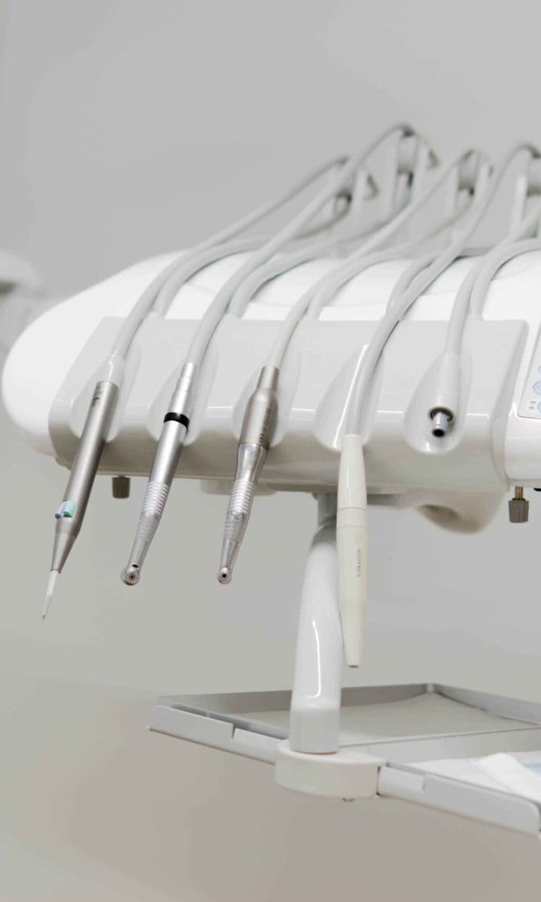
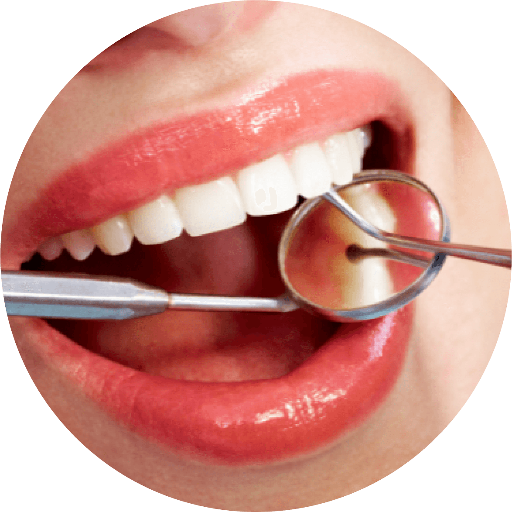

Especialidad
Periodoncia
«La importancia de cuidar los tejidos que rodean al diente»

¿Qué es la periodoncia?
La periodoncia es la rama de la odontología que se ocupa de la prevención, diagnóstico y tratamiento de las enfermedades de los tejidos de sostén de los dientes (encía, ligamento periodontal, cemento radicular y hueso alveolar).
Cuando la inflamación o infección de las encías (denominada gingivitis) no se resuelve a tiempo, el problema se va haciendo cada vez más grave, produciéndose una periodontitis o enfermedad periodontal que puede llegar a provocar que los dientes se vayan aflojando y finalmente se caigan por la reabsorción de hueso que conlleva. Para solucionar el problema de la gingivitis y eliminar la inflamación inicial y sangrado de las encías basta con realizar una limpieza con ultrasonidos según la recomendación de tu especialista cada 9 o 12 meses dependiendo de los casos.
La periodontitis es una inflamación e infección de los ligamentos y huesos que sirven de soporte a los dientes. La periodontitis es una de las enfermedades más comunes que sufren los pacientes, independientemente de su edad. Aunque existen distintos grados, en los casos más graves se puede llegar a la pérdida del diente.
La enfermedad periodontal puede desarrollarse sin mostrar síntomas, y al ser una enfermedad de curso crónico es muy importante acudir periódicamente al dentista a hacerse una revisión general. Las limpiezas periódicas ayudan a impedir el avance de la gingivitis a enfermedad periodontal.
¿Cómo detectar la enfermedad periodontal?
Algunos de los signos y síntomas que pueden aparecer son:
- Sangrado de la encía al comer, cepillarse los dientes o sangrado espontáneo.
- Dolor, hinchazón y sensibilidad en las encías sin razón aparente.
- Cambio de color de la encía, aparece más enrojecida y brillante.
- Mal aliento y mal sabor de la boca.
- Dientes con movilidad, que se ven cada vez más largos y pueden aparecer espacios entre los dientes que antes no había.
Las principales causas que provocan el avance de la gingivitis hacia enfermedad periodontal son:
- El hábito de fumar: además de aumentar el riesgo de padecer la enfermedad de las encías, reduce la efectividad de algunos tratamientos.
- Mala higiene bucal y ausencia de cuidados profesionales.
- Cambios hormonales en niñas y mujeres que hacen más sensibles las encías.
- Otras enfermedades que debilitan las encías, como la diabetes, la osteoporosis o infecciones frecuentes por virus.
- Medicamentos que reducen el flujo de saliva.
- Genética.
- Hábitos alimenticios.
¿Cómo solucionar la enfermedad periodontal?
El primer paso del tratamiento es eliminar las bacterias responsables de las bolsas periodontales que se forman alrededor de los dientes mediante raspado y alisado radicular (curetajes), de esta manera eliminamos no sólo las bacterias, sino también la placa y el sarro de las raíces de los dientes y tratamos la superficie radicular para dificultar la adhesión de las bacterias.
En las enfermedades más avanzadas, puede ser necesaria cirugía periodontal y en algunos casos es necesaria además la extracción de uno o varios dientes. Cuando el tratamiento activo termina, la enfermedad debe estar controlada (fase de mantenimiento) que es indispensable para evitar que reaparezca después de un tiempo. Realizamos revisiones periódicas y de mantenimiento adaptadas a las necesidades de cada paciente, y os vamos avisando mediante mensajes a vuestro móvil cuando se acerca la fecha de las revisiones.
Implantología en pacientes periodontales
¿Se puede aplicar la implantología a una persona que ha perdido dientes a causa de enfermedad periodontal?
El éxito de la implantología avanzada hace que los implantes dentales sean una alternativa viable y efectiva para la sustitución de dientes en pacientes con periodontitis. Eso sí, antes de la colocación de implantes, se debe tratar correctamente la enfermedad periodontal para evitar la pérdida adicional del hueso y que el problema se extienda al resto de dientes. También debemos hacer un mayor y exhaustivo estudio radiográfico del hueso remanente para valorar cuales serán las posiciones más idóneas para la colocación de los implantes que sustituirán a las piezas perdidas por la enfermedad.
Además la boca debe estar sana como en cualquier otro caso de implantes y deben realizarse mantenimientos durante toda la vida cada 6 o 9 meses en este tipo de casos. También te recomendamos extremar la higiene personal y el uso de irrigadores orales para maximizar la eliminación de bacterias, placa etc.
Curetajes o raspado y alisado radicular
Si la gingivitis (inflamación y sangrado de la encía) avanza, el proceso pasa a denominarse periodontitis. En la periodontitis además de existir inflamación y sangrado, se forman las llamadas bolsas periodontales.
Las bolsas periodontales son «huecos» que se crean alrededor de los dientes, debidos a la recesión o a la disminución de la altura del hueso que les sujeta. Por tanto se pierde la anatomía de la encía (papilas planas y abultadas) y se pierde también el anclaje de los dientes apareciendo movilidad dental.
Esta enfermedad normalmente pasa desapercibida pues no es dolorosa hasta cuando la movilidad es excesiva, va normalmente muy asociada a la higiene personal y al tabaquismo, y tiene también un componente hereditario.
En estos casos el tratamiento de elección son los curetajes o también llamado raspado y alisado radicular. Se diagnostica tras la exploración clínica donde se ven determinadas evidencias, y con una serie radiográfica. Esta serie es un conjunto de radiografías periapicales donde analizaremos y mediremos la profundidad y presencia de esas bolsas periodontales.
Para realizar el tratamiento el periodoncista te citará en una o dos sesiones, de manera que dividiendo la boca por «cuadrantes», te anestesie uno o dos de ellos. Bajo el efecto de la anestesia local (misma que para cualquier otro procedimiento) podremos llegar con las «curetas» (instrumentos delgados y afilados) a limpiar y pulir la superficie de raíz que ha quedado expuesta en todas y cada una de las bolsas periodontales detectadas en las radografías. A continuación pasaremos el ultrasonidos a toda la zona anestesiada.
Es un proceso minucioso y, en general, bien tolerado. Este tratamiento permite detener la enfermedad periodontal, aunque no vamos a poder recuperar el nivel de hueso perdido. Por tanto es imprescindible extremar la higiene personal y realizar revisiones periódicas cada 6 meses para mantener un buen estado periodontal.
Si te queda alguna duda no dudes en venir a consultarnos, te explicaremos personalmente como es tu caso y la necesidad o no de tratamiento.
